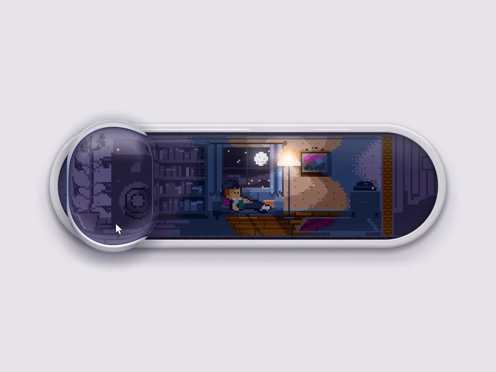

一条看起来像普通音量滑杆的胶囊轨道，里面其实是一间像素小屋。拖动滑杆，屋里的人会睡觉、读书、打拍子、跳舞；音量几乎拉满时，房间会晃，墙上的画框会倾斜，隔壁还会来敲门。作者 Lattice 把它叫做「住人のいる音量」，源码按 MIT 许可发布，复制时须保留第一行署名。

这是一件什么作品
「住人のいる音量」是一个可复制的网页滑杆组件，标识为 slider-resident，归在「部件 · 滑杆」，标签是 experimental 与 motion，页面记录的版本为 5。它发布在 Ludion 上：这是 Lattice 以个人身份运营的 UI 作品站，官方面说明是「看别人放上的界面和部件，复制代码，用到自己的站点」。2026-11-10 现场阅读关于页与作品页，二者都写明作品许可为 MIT，并且「复制出的代码第一行会留下作者的署名行」。
源码开头的题记把机制写得很清楚：轨道里面是一间低分辨率的像素房间，住着一个人；房间只用调色板编号来画，光靠阶梯和抖动来表现，不造中间色，显示时按整数倍放大。轨道外侧则是抛光表面、凹下去的玻璃，以及用 WebGL 画的液体透镜，透镜会把下面的画面稍微放大。从音箱发出的波会传到透镜所在的位置，波碰到的东西会跟着晃。「音量高低，会直接变成房间里发生的事。」颜色不写在 JavaScript 里，而是取一组 CSS 变量的色相，再配上规定的明度。
真正接收拖动和键盘操作的，是一个透明的原生 <input type="range">（范围 0 到 100，页面里的默认值是 72），画面则全部由 canvas 绘制。作品页还写明：若设备开了「减少动态效果」，动画会停住，可以由访问者再打开。
音量如何变成房间里的事
组件用 aria-valuetext 把当前音量读成一句房间里的状态。以下阈值与措辞来自 2026-11-10 在作品页上可见的源码（常量 READ_TO = 30、TAP_TO = 62、MAX_FROM = 98），不是观看视频后的推测：
- 0：住人在睡觉
- 1–30：住人戴着耳机在读书
- 31–62：住人用脚打着拍子
- 63–97：住人站起来跳舞
- 98–100：房间在晃，墙上的画框倾斜，隔壁正在敲墙壁
源码题记还提到节拍为 108 BPM，以及灯、沙发、音箱、画框和隔壁房间等布局。本页不转载完整实现，也不把这些内部名字写成已经在视频里被逐帧核对过的画面。
原帖全文
以下为作者日文短帖的中文译文。原帖不是 X 长文，正文只有一句，附件是视频；演示链接是他稍后在回复里给出的。
我不小心做了个很容易让人上瘾的音量滑杆……
作者：Lattice（@Lattice_Node）；发布：2026-11-09 10:47（新加坡时间，UTC+8）。原帖附视频，点击观看。
日文原文
中毒性の高い音量調整バーを作ってしまった...
作者回复
在可检索的作者本人回复里，有两条。
当天 17:35（新加坡时间），他给出了可交互的作品页，并请人关注新开的官方账号：
官方账号开好了，请关注！
@Ludion_AI
想亲手试试的话，在这里↓
日文原文：「公式アカウント作ったのでフォローお願いします！／@Ludion_AI／ここで実際に触れます↓」。链接指向 ludion.ai/p/slider-resident。查看这条回复。
次日 09:41，他又在原帖线程里引用了自己另一条帖子，正文没有另写说明。被引用的帖发布于 09:26，说的是：「这个开关，换作你会怎么改？不妨试试『重新混合』功能。」并指向 Ludion 首页。那是平台上的再创作入口，也对应他的另一件作品「住人のいるスイッチ」，不要和本页这根音量滑杆混成同一件东西。被引用的帖 · 线程里的引用回复。
封面帧里能看见什么
封面是作者自己发布的视频静帧，不是实拍人物照片。浅灰背景上横着一条白边胶囊滑杆：左侧是一枚圆而厚的玻璃透镜，底下是像素风的音箱；轨道里是一间夜景小屋，窗外有月亮和星点，落地灯亮着，一个像素小人坐在沙发或矮台上，墙边还有画框和深色家具。透镜下沿有一个白色鼠标指针。这一帧只能说明「滑杆里确实有房间和住人」，不能代替完整的 14.5 秒演示，也不能据此判断当时音量处在上面哪一档。
Ludion、署名与许可
Ludion 的 X 官方账号 @Ludion_AI 简介写着：「可触摸 UI 的展示场。让作者名字留下来的代码，以开源方式发布。」关于页（日文与英文一致）写明：站由个人 Lattice 运营；作品许可为 MIT；复制出的代码第一行会留下作者署名。询问渠道是 X 上的 @Lattice_Node。
本作品源码里的署名为：
<!-- UI by @Lattice_Node — ludion.ai/p/slider-resident (MIT) -->2026-11-10 核对此页时，作品页计数为 3,631 次查看、298 次复制、9 次收藏；作者主页共 10 件作品。作品记录上的 published_at 是 2026-11-08 00:00:00 UTC（新加坡时间 08:00），这一时间戳落在午夜，可能只精确到日期，不能当成上线时刻。以上数字都会变。
站点声明了 MIT，但关于页和作品页都没有全文转载 OSI 的 MIT 许可正文，也没有写成「Copyright (c) 某年 某人」的单独版权行。下面附录的是通用 MIT 许可文本，供对照；再分发或改写源码时，仍须保留上面那一行署名，并以作品页上的现行声明为准。本页不转载完整源码，请到原作品页复制。
源码题记（中译）
以下译自作品页可见源码开头的作者题记，不是另写的 README。日文原文附后。
住着人的音量：音量滑杆的轨道里有一间像素小屋，里面住着一个人。
房间：以低分辨率、只用调色板编号来画。光用阶梯和抖动来表现，不造中间色。显示时始终按整数倍放大。
外侧：抛光的表面、凹下去的玻璃，以及用 WebGL 画的液体透镜。透镜会把下面的画面稍微放大。
声音：从音箱发出的波会传到透镜所在的位置。波碰到的东西会跟着晃。音量高低，会直接变成房间里发生的事。
颜色不写在 JS 里。用
--_bg、--_surface、--_fg、--_muted、--_accent的色相，加上规定的明度，排列而成。
题记日文原文
住人のいる音量：音量のスライダーのレールの中に、ピクセルの部屋があり、住人が1人暮らしている。
部屋：低い解像度で、パレットの番号だけで描く。光は段階とディザで表し、中間色を作らない。常に整数倍で写す。
外側：磨かれた面、くぼんだガラス、液体のレンズを WebGL で描く。レンズは下の絵を少し拡大する。
音：スピーカーから出る波は、レンズのところまで届く。波が触れたものは揺れる。音量が、そのまま部屋の出来事になる。
色は JS に書かない。--_bg、--_surface、--_fg、--_muted、--_accent の色相に、決めた明るさを与えて並べて作る。
MIT 许可（通用文本）
MIT License
Permission is hereby granted, free of charge, to any person obtaining a copy
of this software and associated documentation files (the "Software"), to deal
in the Software without restriction, including without limitation the rights
to use, copy, modify, merge, publish, distribute, sublicense, and/or sell
copies of the Software, and to permit persons to whom the Software is
furnished to do so, subject to the following conditions:
The above copyright notice and this permission notice shall be included in all
copies or substantial portions of the Software.
THE SOFTWARE IS PROVIDED "AS IS", WITHOUT WARRANTY OF ANY KIND, EXPRESS OR
IMPLIED, INCLUDING BUT NOT LIMITED TO THE WARRANTIES OF MERCHANTABILITY,
FITNESS FOR A PARTICULAR PURPOSE AND NONINFRINGEMENT. IN NO EVENT SHALL THE
AUTHORS OR COPYRIGHT HOLDERS BE LIABLE FOR ANY CLAIM, DAMAGES OR OTHER
LIABILITY, WHETHER IN AN ACTION OF CONTRACT, TORT OR OTHERWISE, ARISING FROM,
OUT OF OR IN CONNECTION WITH THE SOFTWARE OR THE USE OR OTHER DEALINGS IN THE
SOFTWARE.对照 Condensed 中文大意：允许免费使用、复制、修改、合并、发布、再许可和出售，条件是在所有副本或重要部分中保留上述版权声明与本许可声明；软件按「原样」提供，不附带适销性、特定用途适用性或非侵权等保证。这不是法律意见。
传播数据（快照）
2026-11-10 经 X 接口读取时，原帖约 48.5 万次浏览、1.05 万赞、814 次转发、54 条引用、95 条回复、2,730 次收藏。这些数字会变，只作当时记录，不是效果评测。
核实边界与署名
- 这是以该 MIT 作品为中心的导读，并收录作者本人日文短帖与回复的全文中译；题记亦全文译出。完整源码请到原作品页查看，本页不转载。
- 许可依据 2026-11-10 现场阅读的 关于页、英文关于页与作品页可见声明及源码首行署名。未访问被 robots.txt 禁止的
/p/*/code或/api/。站点未全文刊出 OSI MIT 正文。 - ⚠️ 未下载或观看约 14.5 秒的附件视频，也未在浏览器里拖动该滑杆做交互核验；封面帧只代表其中一帧。音量档位的说明来自源码中的无障碍读法，不是对视频画面的逐帧对照。
- ⚠️ 作者简介所写「19 岁、大学生、个人开发」为自报，未独立核实。
- ⚠️ Ludion 作品页与作者主页上的查看、复制、收藏次数，以及作品记录中的发布时间戳，均为核对当时的快照；午夜时间戳可能只精确到日期。